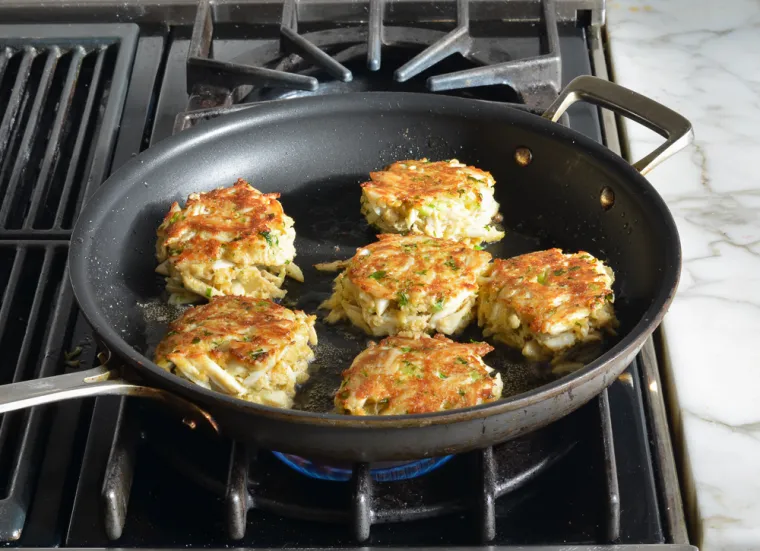

Crab Cakes

Ingredients
- fresh lump crab meat
- celery
- mayo
- salt
- parsley
Steps
- In a small bowl, whisk together mayo, egg,
Dijon mustard, Worcestershire, and hot sauce,
and season with salt and pepper.
- In a medium bowl, stir together crabmeat, panko, and parsley.
Fold in mayo mixture, then form into 8 patties.
- In a large skillet over medium-high heat, coat pan with oil
and heat until shimmering. Add crab cakes and cook, in batches,
until golden and crispy, 3 to 5 minutes per side.
- Serve with lemon and tartar sauce.